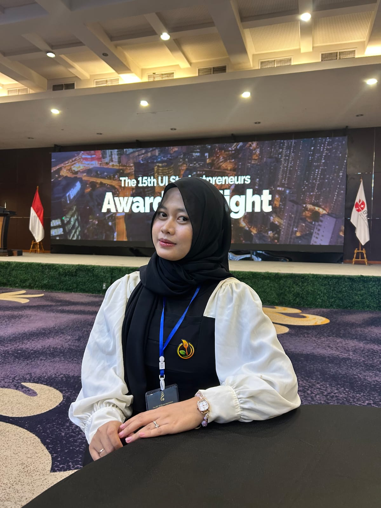

Mahasiswa Sistem Informasi Universitas Negeri Semarang yang tertarik pada business, data, project management, dan pengembangan solusi berbasis teknologi.
Halo! Saya Zahra Tus Shifa, mahasiswa Sistem Informasi Universitas Negeri Semarang. Saya memiliki ketertarikan pada pengembangan bisnis, teknologi, data, serta penyusunan dan pengembangan ide menjadi sebuah proyek.
Saya terbiasa bekerja dalam tim, mengembangkan konsep proyek, melakukan perencanaan bisnis, serta menyampaikan ide melalui presentasi dan pitching.
| Tahun | Institusi | Program Studi |
|---|---|---|
| 2025 - Sekarang | Universitas Negeri Semarang | Sistem Informasi |
| 2022 - 2025 | SMAN 1 Pemalang | Program IPS, Informatika, dan Kewirausahaan |
Mengembangkan konsep, membagi tugas, mengoordinasikan tim, dan memastikan proyek berjalan sesuai tujuan.
Mengembangkan ide bisnis, melakukan analisis, menyusun strategi, dan membuat business plan.
Memiliki ketertarikan pada pengolahan data, database, dan penggunaan data sebagai dasar dalam pengambilan keputusan.
Terbiasa menyampaikan ide, membuat presentasi, dan melakukan pitching dalam proyek maupun kompetisi.
Beberapa proyek yang pernah saya kerjakan dalam bidang teknologi, bisnis, dan pengembangan ide.
CompMate merupakan proyek sistem informasi untuk membantu mahasiswa menemukan anggota tim yang sesuai berdasarkan kompetisi dan kemampuan yang dimiliki.
Dalam proyek ini saya terlibat dalam perancangan database, penyusunan ERD, serta pengembangan konsep sistem.
Fokus: Database, Sistem Informasi, dan Project Development
WeLink merupakan konsep platform membership untuk membantu UMKM mengelola hubungan dengan pelanggan melalui sistem membership digital.
Dalam proyek ini saya berperan dalam project management dan business planning, mulai dari pengembangan ide, strategi bisnis, hingga penyusunan dan presentasi business plan.
Fokus: Business Planning, Project Management, Digital Business, dan Presentation
Sekretaris. Berkontribusi dalam pengelolaan administrasi, dokumentasi, dan koordinasi kegiatan organisasi.
Ketua 1 OSIS periode 2023-2024. Bertanggung jawab dalam koordinasi pengurus dan pelaksanaan program kerja organisasi.
Sekretaris. Bertanggung jawab dalam administrasi, surat-menyurat, proposal, dan dokumentasi organisasi.
| Tahun | Prestasi |
|---|---|
| 2026 | Juara 3 Business Plan Competition 15th UI Studentpreneurs |
| 2024 | Juara 2 Lomba Cerdas Cermat Empat Pilar Kebangsaan Tingkat Provinsi |
| 2024 | Juara 3 Society Business Plan Competition Fisipol UGM Tingkat Nasional |
| 2023 | Juara 3 Business Plan Competition Tingkat Nasional |
| 2024 | Juara 2 FLS2N Menulis Cerpen Tingkat Kota |
| 2024 | Juara 3 OSN Ekonomi Tingkat Kota |
Saya aktif mengikuti kegiatan organisasi, kepanitiaan, kompetisi, dan proyek akademik. Pengalaman tersebut membantu saya mengembangkan kemampuan komunikasi, kepemimpinan, kolaborasi, dan problem solving.
Email: zahraatusshifa@gmail.com
Instagram: @zarrashefa
LinkedIn: www.linkedin.com/in/zahratusshifa